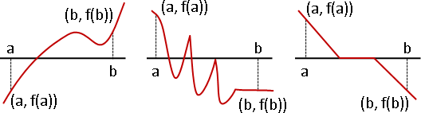
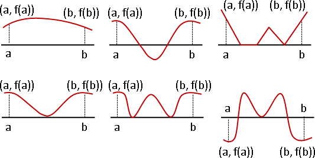
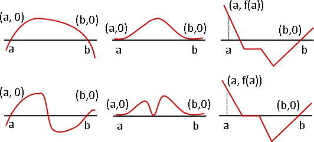
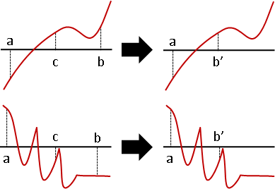
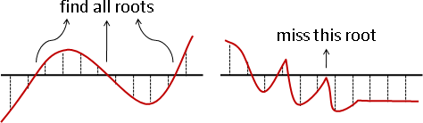
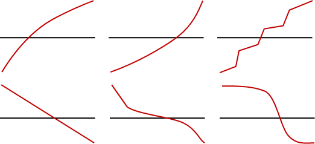

Root Finding: Bisection Method
用途
用來找到連續函數的根。bi-這個字首是「雙」的意思，而section是「分段」的意思。中文譯作「二分法」。
勘根定理
解釋演算法之前，得先複習一下高中數學的「勘根定理」。
連續函數的圖形當中，當起點與終點分別在X軸的兩側，那麼一定在某處穿過X軸。換句話說，在某處有根。換句話說，至少有一個根。
以數學符號說明勘根定理
連續函數f(x)，任意區間[a,b]。a和b分別代入f(x)，得到f(a)和f(b)。
如果f(a)和f(b)是一正一負、是異號，即f(a) f(b) < 0，就表示座標(a, f(a))和座標(b, f(b))這兩點位於X軸的兩側。因為f是連續函數，所以座標(a, f(a))到座標(b, f(b))的路線，一定碰到X軸至少一次──區間[a,b]裡面至少有一個根。
如果f(a)和f(b)是同號，即f(a) f(b) > 0，就表示座標(a, f(a))和座標(b, f(b))這兩點位於X軸的同側──區間[a,b]裡面可能有根，也可能無根。
如果f(a)和f(b)有零，即f(a) f(b) = 0，此時a和b就是根──區間[a,b]裡面可能還有其他根，也可能無根。
另外，當[a,b]的端點恰好沒有定義在f(x)當中，則無法計算出f(a)和f(b)的值。要解決這個問題，可以將區間略微縮小一些，像是[a + 0.001, b - 0.001]，即可避免端點沒有定義的情況。
比較差的演算法
將區間切兩半，遞迴縮小區間，夾擠、逼近根。

這種方式有個很大的問題：如果左右兩個區間都做檢查，結果就跟窮舉法沒兩樣。
二分法
不如只檢查其中一個區間吧！
只檢查確定有根的區間，即f(a)和f(b)異號的區間。如果左右兩個區間都確定有根，那麼就只檢查左邊區間。一旦找到根，就馬上結束遞迴。
至於f(a)和f(b)同號的區間、f(a)和f(b)為零的區間，就無法處理了。
這就是二分法。二分法其實也正是Binary Search。
找到所有根
整條數線細分成許多微小區間。f(a)和f(b)同號的區間，視作沒有根；f(a)和f(b)為零的區間，視作只有端點有根；f(a)和f(b)異號的區間，視作剛好有一個根，實施二分法找到根。
只要細分的足夠細膩，理論上可以找到所有根，除了一種例外：根恰好是區域極值。此時必須配合其他的求根方法，才能處理這個例外。
精確度
分割區間越多次，答案就越精確。
float、double變數，能夠儲存的位數有限，不可能精確，有著一個極限。不斷分割區間，就能到達極限。一個float變數的範圍約為10^38到10^-38，分割區間log₂(10^76) ≒ 252次，定能得到float變數所能儲存的最精確的數值。
根據個人測試，不管迴圈計算多少遍，a b的大小關係永遠不變，而c永遠會在[a,b]當中，不會超出範圍。
迴圈不斷計算之後，有些函數造成a b最終相等，也有些函數造成a b永遠不相等，永遠相差一個最小精確度的值。要解決不相等的問題，只需判斷c是a或是b即可。
範例：求平方根
嚴格遞增函數
連續函數，嚴格遞增（減）；若有根，保證只有一個根。
